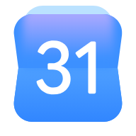

Microsoft Entra ID
Provision and revoke physical access automatically via SCIM as your directory changes, with Single Sign-On built in.
Partner Directory
Connect your physical spaces with your daily digital workflows. Browse our verified partners or use the sidebar to navigate our ecosystem.
Automate user lifecycles and enforce secure access policies across your organization.
Provision and revoke physical access automatically via SCIM as your directory changes, with Single Sign-On built in.

Provision and revoke physical access automatically from your Google directory groups, with Single Sign-On built in.

Enforce zero-trust physical access with real-time SCIM provisioning and centralized SSO credentials.
Connect your scheduling tools to your doors to automate access across your shared spaces.

Turn calendar invites into instant door access for everyone on the invite, just for the meeting window.

Grant room access straight from Outlook bookings, valid only for the reserved window.
Keep operations in the loop with security alerts, important events, and guest check-ins, right in the tools your team already uses.
Catch security events the moment they happen, from door-held-open to forced entry, right in the channels your team lives in.

Turn every security and device-health event into an instant Teams alert, so IT can respond before it escalates.